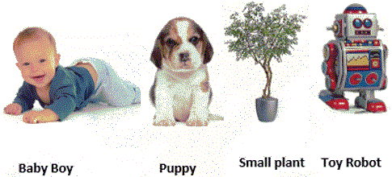

<!DOCTYPE html>
<html>
<head>
	<meta charset="UTF-8">
	<link href="../css/style.css" rel="stylesheet" />
</head>
 <body>
<script type="text/javascript" src="../../practise_code.js"></script>
<script>

//Living and Non Living things

var questions = [
["Which one is the property of non-living thing - ","Needs food and water to live","Can move","Can grow and die","Cannot move on their own","D"],
["Living things - ","Cannot feel","Cannot move","Reproduce","Cannot breathe","C"],
["Which of the following is true","All non living things are man-made things.","All living things are man-made things.","All living things are natural things","All non-living things are natural things","C"],
["Which of the following is the living thing","Book","Plant","Ball","Table","B"],
["All plants and animals are _____","Artificial things","Non-Living things","Living things","Man-made things","C"],
["Riddhima observes an unknown object,it moves, grows and dies.the object is  -","Artificial things","Non-Living things","Living things","Man-made things","C"],
["Which of the following is the living thing","Cell phone","Ant","Toy","Fire","B"],
["Living things need ____ to live","Food","Water","Air","All of Above","D"],
["Which of the following is man made thing - <BR>","Mountains","River","Rocket","Desert","C"],
["<BR>After 1 year whose size would remain same","Baby Boy","Puppy","Plant","Robot","D"],
//[ "Which of the following is the living thing?","Bag","Neem Tree","Tomato","Water","B"],
//["Which one of the following can move from one place to another on its own -<BR>","Chair","Plant","House","Rabbit","D"],
//["Which of the following will die without food and water?","Teddy bear","Mango tree","Whale","Both (a) and (c)","D"],

]

</script>
<table><tr>
  <td class="timer-pic"></td><td class="timer-text"><p id="demo" ></p></td> 
</tr>
</table>
<h2 id="test_status"></h2>
<div id="test"></div>
</body>
</html>